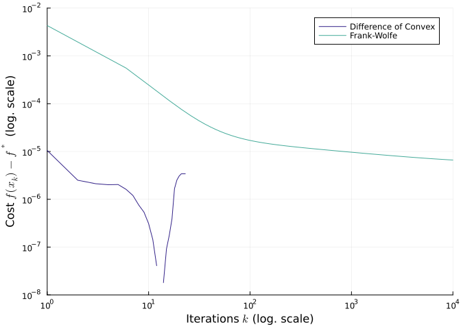

A comparison of the Difference of Convex and Frank Wolfe Algorithm
Ronny Bergmann 2023-11-06
Introduction
In this example we compare the Difference of Convex Algprithm (DCA) [BFSS23] with the Frank-Wolfe Algorithm, which was introduced in [WS22]. This example reproduces the results from [BFSS23], Section 7.3.
using LinearAlgebra, Random, Statistics, BenchmarkTools
using ManifoldsBase, Manifolds, Manopt, ManoptExamples
using NamedColors, Plotsand we load a few nice colors
paul_tol = load_paul_tol()
indigo = paul_tol["mutedindigo"]
teal = paul_tol["mutedteal"]We consider the collowing constraint maximimization problem of the Fréchet mean on the symmetric positive definite matrices $\mathcal P(n)$ with the affine invariant metric. Let $q_1,\ldots,q_m \in \mathcal P(n)$ be a set of points and $\mu_1,\ldots,\mu_m$ be a set of weights, such that they sum to one. We consider then
\[\operatorname*{arg\,max}_{p\in\mathcal C}\ \ h(p)\]
with
\[h(p) = \sum_{j=1}^m \mu_j d^2(p,q_i), \quad \text{ where } d^2(p,q_i) = \operatorname{tr}\bigl( \log^2(p^{-\frac{1}{2}}q_jp^{-\frac{1}{2}}) \big) \qquad\text{and}\qquad \mathcal C = \{ p\in {\mathcal M}\ |\ \bar L\preceq p \preceq \bar U \},\]
for a lower bound $L$ and an upper bound $U$ for the matrices in the positive definite sense $A \preceq B \Leftrightarrow (B-A)$ is positive semi-definite
When every one of the weights ${\mu}_1, \ldots {\mu}_m$ are equal, this function $h$ is known as the of the set $\{q_1, \dots, q_m\}$.
And for our example we set
Random.seed!(42)
n = 20
m = 100
M = SymmetricPositiveDefinite(n)
q = [rand(M) for _ in 1:m];
w = rand(m)
w ./=sum(w)We use as lower and upper bound the arithmetic and geometric mean $L$ and $U$, respectively.
L = inv( sum( wi * inv(qi) for (wi, qi) in zip(w,q) ) )
U = sum( wi * qi for (wi, qi) in zip(w,q) )As a starting point, the Frank-Wolfe algorithm requires a feasible point. We use
p0 = (L+U)/2And we can check that it is feasible
Common Functions
Given $p \in \mathcal M$, $X \in T_p\mathcal M$ on the symmetric positive definite matrices M, this method computes the closed form solution to
\[\operatorname*{arg\,min}_{q\in {\mathcal C}}\ \langle X, \log_p q\rangle = \operatorname*{arg\,min}_{q\in {\mathcal C}}\ \operatorname{tr}(S\log(YqY))\]
where $\mathcal C = \{ q | L \preceq q \preceq U \}$, $S = p^{-1/2}Xp^{-1/2}$, and $Y=p^{-1/2}$.
The solution is given by $Z=X^{-1}Q\bigl( P^{\mathrm{T}}[-\operatorname{sgn}(D)]_{+}P+\hat{L}\bigr)Q^{\mathrm{T}}X^{-1}$,@ where $S=QDQ^{\mathrm{T}}$ is a diagonalization of $S$, $\hat{U}-\hat{L}=P^{\mathrm{T}}P$ with $\hat{L}=Q^{\mathrm{T}}XLXQ$ and $\hat{U}=Q^{\mathrm{T}}XUXQ$, where $[-\mbox{sgn}(D)]_{+}$ is the diagonal matrix
\[\operatorname{diag}\bigl( [-\operatorname{sgn}(d_{11})]_{+}, \ldots, [-\operatorname{sgn}(d_{nn})]_{+} \bigr)\]
and $D=(d_{ij})$.
@doc raw"""
closed_form_solution!(M, q, L, U, p X)
Compute the closeed form solution of the constraint sub problem in place of ``q``.
"""
function closed_form_solution!(M::SymmetricPositiveDefinite, q, L, U, p, X)
# extract p^1/2 and p^{-1/2}
(p_sqrt_inv, p_sqrt) = Manifolds.spd_sqrt_and_sqrt_inv(p)
# Compute D & Q
e2 = eigen(p_sqrt_inv * X * p_sqrt_inv) # decompose Sk = QDQ'
D = Diagonal(1.0 .* (e2.values .< 0))
Q = e2.vectors
#println(p)
Uprime = Q' * p_sqrt_inv * U * p_sqrt_inv * Q
Lprime = Q' * p_sqrt_inv * L * p_sqrt_inv * Q
P = cholesky(Hermitian(Uprime - Lprime))
z = P.U' * D * P.U + Lprime
copyto!(M, q, p_sqrt * Q * z * Q' * p_sqrt)
return q
endThe Difference of Convex Formulation
We use $g(p) = \iota_{\mathcal C}(p)$ as the indicator funtion of the set $\mathcal C$. We use
function is_pos_def(p; atol=5e-13)
e = eigen(Symmetric(p))
return all((e.values .+ atol) .> 0)
end
function g(p, L, U)
return (is_pos_def(p-L) && is_pos_def(U-p)) ? 0.0 : Inf
end
h(M, p, w, q) = sum(wi * distance(M, p, qi)^2 for (wi, qi) in zip(w,q) )So we can first check that p0 is feasible
g(p0,L,U) == 0.0trueNow setting
\[\operatorname*{arg\,min}_{p\in\mathcal M}\ g(p) - h(p)\]
We look for a maximum of $h$, where $g$ is minimal, i.e. $g(p)$ is zero or in other words $p \in \mathcal C$.
The gradient of $h$ can also be implemented in closed form as
grad_h(M, p, w, q) = -2.0 * sum(wi * log(M, p, qi) for (wi, qi) in zip(w, q))
function grad_h!(M, X, p, w, q)
Y = copy(M, p, X)
zero_vector!(M, X, p)
for (wi, qi) in zip(w,q)
log!(M, Y, p, qi)
Y .*= - 2.0*wi
X .+= Y
end
return X
endAnd we can further define the cost, which will just be $+\infty$ outside of $\mathcal C$. We define
f_dc(M, p) = g(p, L, U) - h(M, p, w, q)
grad_h!(M, X, p) = grad_h!(M, X, p, w, q)
function grad_f_dc!(M,X, p)
grad_h!(M, X, p, w, q)
X .*= -1.0
return X
endHere we can omit the gradient of $g$ in the definition of $\operatorname{grad} f$, since the gradient is zero at the points there it is defined, that is on any point that is not on the boundary of $\mathcal C$.
As the last step, we can provide the closed form solver for the DC sub problem given at iteration $k$ by
\[\operatorname*{arg\,min}_{p\in \mathcal C}\ \big\langle -\operatorname{grad} h(p^{(k)}), \exp^{-1}_{p^{(k)}}p\big\rangle.\]
Which we con compute
function dc_sub_solution!(M, q, p, X)
closed_form_solution!(M, q, L, U, p, -X)
return q
endFor safety, we might want to avoid ending up at the boundary of $\mathcal C$. That is we reduce the distance we walk towards the solution $q$ a bit.
function dc_sub_solution_safe!(M, q, p, X)
p_last = copy(M,p) # since p=q might be in place
closed_form_solution!(M, q, L, U, p, -X)
q_orig = copy(M,q) # since we do the following in place of q
a = minimum(real.(eigen(q-L).values))
b = minimum(real.(eigen(U-q).values))
s = 1.0
d = distance(M, p_last, q_orig);
# if we are close to zero, we reduce faster.
α = d < 1/(n^2) ? 0.66 : 0.9995;
i=0
while (a < 0) || (b < 0)
s *= α
shortest_geodesic!(M, q, p_last, q_orig, s)
a = minimum(real.(eigen(q-L).values))
b = minimum(real.(eigen(U-q).values))
#println("$i a: $a, b = $b with s=$s")
i=i+1
if (i>100) # safety fallback
#@warn " $i steps where not enough $s ($α)\n$a $b\n $(distance(M, p_last, q_orig)). Fixing by shifting EVs"
qe = eigen(q)
if a < 0
qe.values .+= min(1e-8, n*abs(min(a,b)))
else
qe.values .-= min(1e-8, n*abs(min(a,b)))
end
q .= qe.vectors * Diagonal(qe.values) * (qe.vectors)'
a = minimum(real.(eigen(q-L).values))
b = minimum(real.(eigen(U-q).values))
return q
end
end
return q
endThe DoC solver run
Let’s compare both methods when they have the same stopping criteria
@time state1_dc = difference_of_convex_algorithm(M, f_dc, g, grad_h!, p0;
gradient=grad_f_dc!,
sub_problem=dc_sub_solution_safe!,
evaluation=InplaceEvaluation(),
stopping_criterion = StopAfterIteration(300) |
StopWhenChangeLess(1e-14) | StopWhenGradientChangeLess(M, 1e-9),
debug = [
(:Iteration, "# %-8d "), (:Cost, "F(p): %0.14f"), (:Change, " |Δp|: %0.14f "),
(:GradientNorm, " |grad f(p)|: %0.8f "),
(:GradientChange, " |Δgrad f(p)|: %0.8f"),
30, :Stop, "\n"],
record = [:Iteration, :Iterate, :Cost, RecordGradientNorm(), :Change],
return_state=true,
)Initial F(p): -0.77661458292831
At iteration 23 the change of the gradient (3.192989916935325e-13) was less than 1.0e-9.
16.034676 seconds (17.19 M allocations: 1.672 GiB, 1.87% gc time, 93.43% compilation time)
# Solver state for `Manopt.jl`s Difference of Convex Algorithm
After 23 iterations
## Parameters
* sub solver state:
| Manopt.ClosedFormSubSolverState{InplaceEvaluation}()
## Stopping criterion
Stop When _one_ of the following are fulfilled:
Max Iteration 300: not reached
|Δp| < 1.0e-14: not reached
|Δgrad f| < 1.0e-9: reached
Overall: reached
This indicates convergence: No
## Debug
:Iteration = [(:Iteration, "# %-8d "), (:Cost, "F(p): %0.14f"), (:Change, " |Δp|: %0.14f "), (:GradientNorm, " |grad f(p)|: %0.8f "), (:GradientChange, " |Δgrad f(p)|: %0.8f"), "\n", 30]
:Stop = :Stop
## Record
(Iteration = RecordGroup([RecordIteration(), RecordIterate(Matrix{Float64}), RecordCost(), RecordGradientNorm(), RecordChange(; inverse_retraction_method=LogarithmicInverseRetraction())]),)Let’s extract the final point and look at its cost
p1_dc = get_solver_result(state1_dc);
f_dc(M, p1_dc)-0.784425242474807As well as whether (and how well) it is feasible, that is the following values should all be larger than zero.
[ extrema(eigen(p1_dc-L).values), extrema(eigen(U-p1_dc).values)]2-element Vector{Tuple{Float64, Float64}}:
(1.1886583723800445e-12, 0.06669240322431051)
(1.3411042178831775e-5, 0.0671353506908023)For the statistics we extract the recordings from the state
Define the Frank-Wolfe functions
For Frank wolfe, the cost is just defined as $-h(p)$ but the minimisation is constraint to $\mathcal C$, which is enfored by the oracle.
f_fw(M, p) = -h(M, p, w, q)
function grad_f_fw!(M,X, p)
grad_h!(M, X, p, w, q)
X .*= -1.0
return X
end
oracle_fw!(M, q, p, X) = closed_form_solution!(M, q, L, U, p, X)The FW Solver Run
Similarly we can run the Frank-Wolfe algorithm with
@time state1_fw = Frank_Wolfe_method(M, f_fw, grad_f_fw!, p0;
sub_problem=oracle_fw!,
evaluation=InplaceEvaluation(),
stopping_criterion = StopAfterIteration(10^4) |
StopWhenChangeLess(1e-14) | StopWhenGradientChangeLess(M, 1e-9),
debug = [
(:Iteration, "# %-8d "), :Cost, (:Change, " |Δp|: %0.14f "),
(:GradientNorm, " |grad f(p)|: %0.8f "),
(:GradientChange, " |Δgrad f(p)|: %0.8f"),
2*10^3, :Stop, "\n"],
record = [:Iteration, :Iterate, :Cost, RecordGradientNorm(), :Change],
return_state=true,
)Initial f(x): -0.776615
# 2000 f(x): -0.784420 |Δp|: 0.04611942377596 |grad f(p)|: 0.17693408 |Δgrad f(p)|: 0.17555618
# 4000 f(x): -0.784421 |Δp|: 0.00372201632005 |grad f(p)|: 0.17694619 |Δgrad f(p)|: 0.00749427
# 6000 f(x): -0.784422 |Δp|: 0.00205683506784 |grad f(p)|: 0.17695204 |Δgrad f(p)|: 0.00414088
# 8000 f(x): -0.784422 |Δp|: 0.00140675676260 |grad f(p)|: 0.17695565 |Δgrad f(p)|: 0.00283200
# 10000 f(x): -0.784422 |Δp|: 0.00106177438611 |grad f(p)|: 0.17695815 |Δgrad f(p)|: 0.00213746
The algorithm reached its maximal number of iterations (10000).
152.680181 seconds (54.53 M allocations: 93.992 GiB, 2.07% gc time, 0.57% compilation time)
# Solver state for `Manopt.jl`s Frank Wolfe Method
After 10000 iterations
## Parameters
* inverse retraction method: LogarithmicInverseRetraction()
* retraction method: ExponentialRetraction()
* sub solver state:
| Manopt.ClosedFormSubSolverState{InplaceEvaluation}()
## Stepsize
DecreasingStepsize(; length=2.0, factor=1.0, subtrahend=0.0, shift=2)
## Stopping criterion
Stop When _one_ of the following are fulfilled:
Max Iteration 10000: reached
|Δp| < 1.0e-14: not reached
|Δgrad f| < 1.0e-9: not reached
Overall: reached
This indicates convergence: No
## Debug
:Iteration = [(:Iteration, "# %-8d "), (:Cost, "f(x): %f"), (:Change, " |Δp|: %0.14f "), (:GradientNorm, " |grad f(p)|: %0.8f "), (:GradientChange, " |Δgrad f(p)|: %0.8f"), "\n", 2000]
:Stop = :Stop
## Record
(Iteration = RecordGroup([RecordIteration(), RecordIterate(Matrix{Float64}), RecordCost(), RecordGradientNorm(), RecordChange(; inverse_retraction_method=LogarithmicInverseRetraction())]),)And we take a look at this result as well
p1_fw = get_solver_result(state1_fw);
f_dc(M, p1_fw)-0.7844220281765162And its feasibility
[extrema(eigen(p1_fw-L).values), extrema(eigen(U-p1_fw).values)]2-element Vector{Tuple{Float64, Float64}}:
(4.904818928410655e-10, 0.06659173821656107)
(3.245654983213335e-5, 0.06713970236096602)Statistics
We extract the recorded values
# DoC
iter1_dc = get_record(state1_dc, :Iteration, :Iteration)
pk_dc = get_record(state1_dc,:Iteration,:Iterate)
costs1_dc = -h.(Ref(M), pk_dc, Ref(w), Ref(q))
dc_min = minimum(costs1_dc)
# FW
iter1_fw = get_record(state1_fw,:Iteration,:Iteration)[1:5:end]
pk_fw = get_record(state1_fw,:Iteration,:Iterate)[1:5:end]
costs1_fw = -h.(Ref(M), pk_fw, Ref(w), Ref(q))And let’s plot the result, where we measure the cost versus the minimum the difference of convex algorithm attains.
fig = plot(;
legend=:topright,
xlabel=raw"Iterations $k$ (log. scale)", ylabel=raw"Cost $f(x_k)-f^*$ (log. scale)",
yaxis=:log,
ylims=(1e-8, 10^-2),
xaxis=:log,
xlims=(1,10^4),
)
plot!(fig, iter1_dc, costs1_dc .- dc_min, color=indigo, label="Difference of Convex")
plot!(fig, iter1_fw, costs1_fw .- dc_min, color=teal, label="Frank-Wolfe")
This indicates, that the difference off convex algorithm could even stop earlier with a proper stopping criterion, since after that the cost increases a bit again.
On the other hand, Frank-Wolfe still has not reached this level function value after 10^4 iterations.
Literature
- [BFSS23]
- R. Bergmann, O. P. Ferreira, E. M. Santos and J. C. Souza. The difference of convex algorithm on Hadamard manifolds. Preprint (2023), arXiv:2112.05250.
- [WS22]
- M. Weber and S. Sra. Riemannian Optimization via Frank-Wolfe Methods. Mathematical Programming 199, 525–556 (2022).